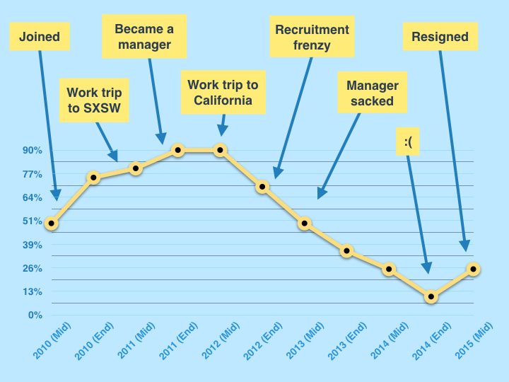
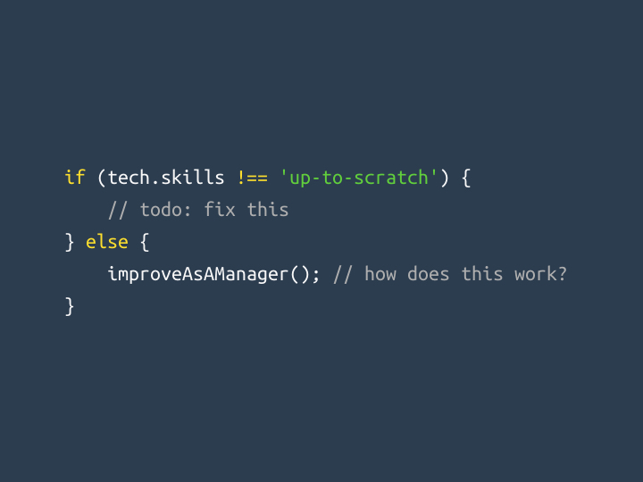
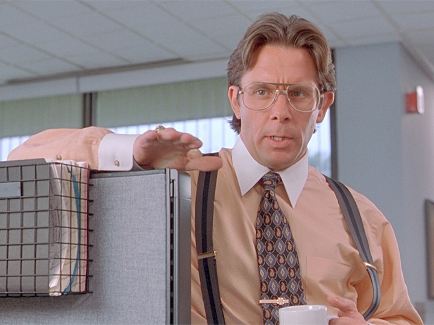
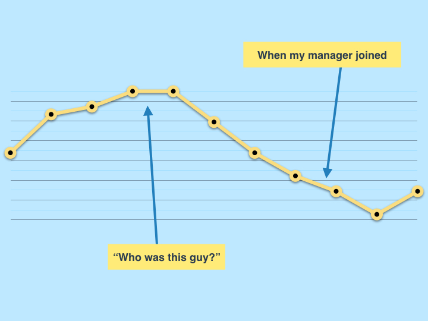
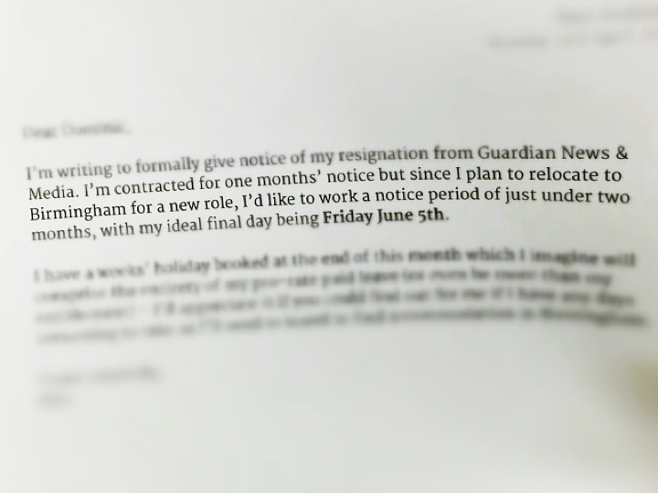

Why You Should Quit Your Job
Lessons learned in job satisfaction
Matt Andrews – @mattpointblank
1st June 2016 • Ignite Brum #3
The Guardian's London offices in Kings Place
From 2010-2015 I worked here (above) at the Guardian newspaper as a client-side web developer. I started working there at the age of 23 and it was my dream job. I want to talk about realising when you're unhappy at work and what to do about it when it happens to you.
Over that time my career satisfaction had peaks and troughs. I recently attempted to chart my happiness at work:
A rough attempt at charting my job satisfaction over five years, coupled with major events at work
It took me a long time—too long—to realise I was unhappy, though. In retrospect, a year after leaving, I can see the signs and the factors which made it difficult for me to admit to myself that I was unhappy.
The fork in the road
In mid 2011 I was offered a the chance to take on management role where I'd divide my time between coding and management. At the time, the software developer role had no formal progression, which meant I was unclear about my next move. I was barely more than a junior developer but the opportunity to learn new things, get paid a bit more and take on more responsibility was exciting.
At first it was great. I was out of my depth but learned as I went. My new position meant I got to go on work trips abroad and be more involved with the running of the department, which was fun.
A nerdy hint of the challenge I faced
A year or so into the role, the department grew. I found myself spending a lot more than the promised 15% of my time reading CVs, conducting interviews and trying to run appraisals and one-to-ones. I felt my coding skills begin to suffer and was unable to find the time to improve them.
I started to get defensive, or perhaps over-sensitive, when others sensed my technical work wasn't up to scratch. I didn't really know what I could do to find the extra time to improve, and by taking the manager role I felt people assumed I had more advanced technical ability than I actually possessed.
The archetypal bad manager?
Similarly, I began to feel like I wasn't doing a great job as a manager either, with little guidance and motivation from above. We got some training but it never quite felt like I knew what I was doing, and the standard of management from others doing the same role as me seemed hugely varied and inconsistent.
A few years of this left me feeling like nobody was helping me develop and that I was left alone. I began to get cynical and started to run away from problems, moving teams to avoid working with challenging developers who brought my shortcomings into focus. I didn't realise then that I was unhappy, though. In retrospect, there were clear signs.
Signs I was unhappy
Getting into pointless debates
Spiderman vs Wolverine? Who gives a shit.
I found myself getting into heated debates about things I didn't really care about, if I was honest. Technical issues that I didn't really understand, product directions, anything. I'd take our my frustrations about my situation by arguing about things, not realising this was sidestepping my real issue. I wasn't brave enough to admit when I didn't understand things so used conversation as a mask.
Ignoring offers of help
Throwing away solutions
Colleagues who knew me well could spot that I wasn't at my best and would take me for chats, suggesting ideas and solutions for improving things. My pride meant I ignored these fixes, finding "reasons" to explain to myself why they wouldn't work. My problems were above my head and outside of my control, I'd reason. Or I'd tell myself that I shouldn't have to go out and figure out my own path, that someone should be figuring it out for me. Either way, finding reasons to avoid actively changing things was the easiest path.
Ranting on social media
Don't be the angry social media user
I sometimes even ranted on social media about work and my colleagues which eventually landed me in hot water. I was bitter and annoyed and couldn't understand why people weren't helping me. It seems obvious now but at the time I felt alone and misunderstood. In reality, being that person whining on Twitter is never a surefire route to finding help and support.
Things to do when unhappy at work
I'd left it too late. I refused to acknowledge that I wasn't enjoying my job, instead blaming circumstances and other people for things I wasn't bold enough to address. By the time I did realise it was down to me, it was too late for me to do things things that could've helped.
Talk to people
Coffee: solves all of life's problems
A few good colleagues could see I was frustrated and took me for a coffee. Plenty of others would've offered me useful advice if I'd bothered to ask them for it. I never did.
I was hardly the first person to struggle with the transition to manager, not even in my own department. Plenty of people I looked up to and respected would've had useful and inspirational words for me if I'd pursued them. My sense of entitlement (due to longevity) meant I was too proud to chase these solutions.
Work out what you can control
They don't make them like this anymore, but you get the idea
Most of my problems were things I could directly control, or at least influence. At the time I found it easier to blame outside factors for my issues.
Surrendering my control of the situation made it easier to pretend there was nothing I could do and allowed me to get more bitter and unhappy.
If I'd made a list of the problems I felt I had and categorised them by three headings: Control, Influence and No Control (or similar), I might've been quite surprised at which things I could've changed. By the end of my time in this job I was quite free to do and say what I wanted: I could have made use of this.
See it from their side
Remember my happiness graph? This is how my boss might've seen it
By the end, I felt like my boss wasn't interested in my development and blamed him for my lack of progress.
But he joined when I was at my lowest ebb – he'd never seen my at my best. What reason was I giving him to invest in me?
All he'd seen of me was someone past their best, negative and self-entitled. I didn't bother to stop and reflect on his motivation and understanding, I just allowed myself to feel mistreated. We are always in control of how we choose to react to something.
Ask for help
Bosses: not actually godlike beings
I ascribed opinions and behaviours to my manager based on my own assumptions. I never sat down and told him my problems directly. I assumed he knew what I wanted, and chose not to help me, which was easier than actually addressing my concerns.
Managers aren't all-knowing, omniscient beings. If I'd been straight with him about how I felt instead of taking offence I might've got more support.
Quit
But if you realise too late and your happiness quotient is in danger of reaching rock bottom, then it's time to leave. I resigned in spring 2015 and immediately felt better and found myself enjoying work again.
In retrospect now I can see that I ignored my problems and avoided addressing them until it was too late and the best option was for me to begin again.
Yep, I Instagrammed my resignation letter. Deal with it.
Sometimes it's about knowing when to move on. I found a new job that's stretched and challenged me. It was a leap in the dark to a team, city and role I'd had little experience of, but it was the right thing: I needed to be reminded that I could be excited, afraid and developer again.
Closing thoughts
Your mental wellbeing and health is too important to risk spending time in a job you're unhappy with. We work to live, not the other way around. I found myself unwilling to face up to the completely normal feeling of being unsatisfied with work, until it became too late to do anything about it. If you feel like this, maybe some of the tips above might help you rediscover your passion for your work. And if they aren't right for you, then maybe it's time you quit your job, too.
— Matt Andrews
mattandrews.info • @mattpointblank
Notes
Many thanks to Mark Steadman for organising Ignite Brum where I gave this talk, and for motivating me to write it.